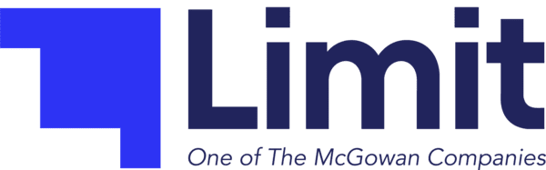
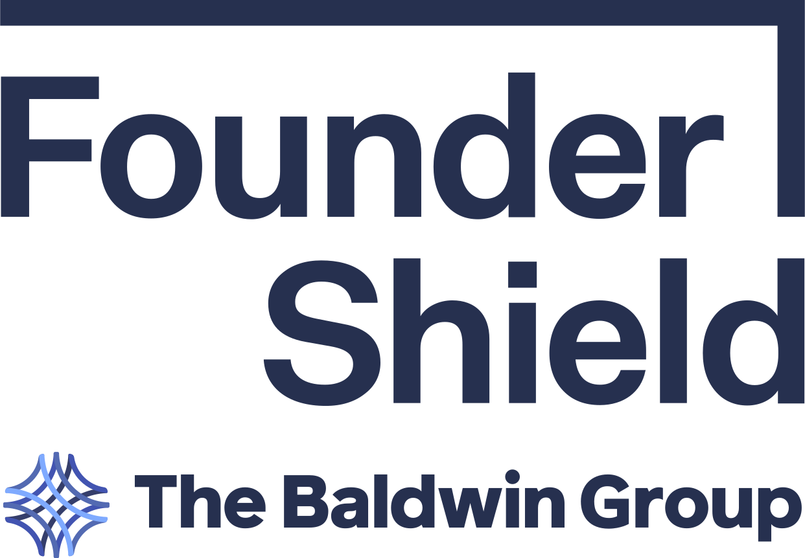
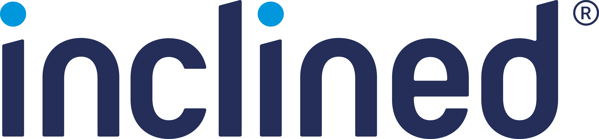
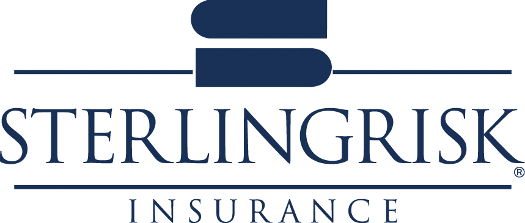

150+ bank formats prebuilt. Every balance is mathematically verified and every field is traced to its exact page coordinate, so a misread digit never reaches underwriting silently.
150+
Pre-built bank configs
75M+
Documents processed
SOC 2 + HIPAA
Certified infrastructure
0.00 Delta
Ledger math verification




4.5 hrs → 12 min
Average underwriter review time per applicant, after bank statement math checks replaced manual line-by-line reconciliation.
3 new bank formats / week
Onboarded without waiting on Sensible engineering: new SenseML configs shipped by their own team from the config library.
0 silent balance errors
Across 40,000+ processed statements, every reconciliation failure is flagged and routed to review, never passed downstream.
This is what actually comes back for a single commercial checking statement: not a marketing number, the output of one extraction run.
Header and account metadata located and typed from the top block.
All 11 transactions anchored across the table, including a page break mid-cycle.
Beginning + deposits − withdrawals checked against the printed ending balance.
Typed JSON returned with a bounding box on every single value.
Built for teams who reconcile real money, not just read text off a page.
Every balance is computed from raw coordinates, then checked against ledger arithmetic before it ships.
Every extracted value carries its exact page and bounding box, back to the original PDF.
A bank layout we've never seen gets a working config the same day, reused across every customer after.
Agentic parsers are fast to demo and slow to trust: they hallucinate pennies, lose rows past a context window, and hand you a number with no way to check it. Sensible pairs layout-aware anchors with ledger arithmetic so every value is provable, not just plausible.
| Raw LLM prompting | Template / rules-only OCR | Sensible (SenseML + Math) | |
|---|---|---|---|
| Continuous tables past 30+ pages | ✕ | TEMPLATE-LOCKED | ✓ |
| Mathematically reconciled balances | ✕ | ✕ | ✓ |
| Exact page + bounding box per value | ✕ | PAGE-LEVEL ONLY | ✓ |
| Handles new bank layout in hours | NO GUARANTEE | ✕ | ✓ |
| Flags tampered / altered statements | ✕ | ✕ | ✓ |
| Deterministic output on re-run | ✕ | ✓ | ✓ |
Numbers are pulled from raw coordinate boxes and validated mathematically. If a digit doesn’t sum, it is flagged immediately.
SenseML table methods track table headers across page boundaries without dropping rows on multi-page statements.
Every single transaction row retains its exact bounding box and page index for compliance audits.
This is the pipeline underneath every extraction, not a black box. LLMs only touch the parts of the document that are genuinely ambiguous; everything with a fixed structure is handled deterministically.
Native text and scanned pages are both normalized into a coordinate-anchored layout tree; every character keeps its page and pixel position.
SenseML anchors locate the header block, balance summary, and transaction table using structural rules matched to the bank’s known format.
Only genuinely unstructured spans, like multi-line wire memos or unfamiliar footnotes, get routed to an LLM, scoped to that one cell.
Every field is cast to its declared type and checked against ledger arithmetic before it ever reaches your JSON response.
Multi-page splits, altered balances, and combined statements break generic OCR tools. Here is how Sensible solves them.
Statements frequently span 10, 30, or 100+ pages with repeated headers, variable column widths, multi-line wire descriptions, and footnote breaks. Deterministic SenseML table anchors parse transactions continuously across breaks without losing row alignment.
Do all transaction credits and debits equal the stated period change? Does the running balance reconcile after every single row? Sensible re-calculates the ledger mathematically to catch OCR character misreads before they reach underwriting.
Detecting font inconsistencies, bounding box misalignments, suspicious metadata, and balance math contradictions that signal altered or fabricated statements before loans or credit lines are approved.
Banks frequently bundle commercial checking, operating reserves, and money market schedules into a single PDF packet. Sensible isolates each account schedule and extracts them into discrete, cleanly keyed sub-ledgers.
A single OCR typo in a transaction amount ruins downstream debt-to-income and cash flow modeling. Sensible executes strict mathematical verification on every document: beginning balance + credits − debits must equal ending balance, and running balances are checked row-by-row.
We don’t publish a flat accuracy percentage. Financial statements demand exact mathematical reconciliation, not probabilistic guesses.
Sensible
Delivering verified financial feeds directly to underwriting models, ERPs, and risk engines.
Calculate Debt Service Coverage Ratios (DSCR), monthly revenue velocity, average daily balances, and NSF instances directly from verified transaction feeds.
Lending & CreditFeed cleared transaction tables directly into NetSuite, QuickBooks, or Xero with continuous bank reconciliation and double-entry validation.
Accounting & ERPInstantly verify borrower cash reserves, check deposit sourcing, and validate recurring payroll income without human line-item reviews.
Mortgage & VOIConsolidate multi-bank balances across dozens of institutions into a unified cash visibility ledger with automated sweep auditing.
Treasury OpsStarting with the one everyone's actually asking now that LLMs can read PDFs.
You can, and it'll work great on page one of a demo. It also has no way to prove a balance is right, no fixed output schema across runs, and it silently drops or merges rows on long tables. Sensible uses LLMs too, but only for the genuinely ambiguous cells, inside a pipeline that mathematically verifies every number before it reaches you. The failure mode isn't "wrong answer," it's "flagged for review."
Sensible executes automated math checks on every statement. It computes the delta between beginning balance and ending balance, sums all extracted credit and debit transactions, and checks that every single running balance row adds up. If an OCR misread turns a $1,200.00 charge into $1,700.00, the arithmetic mismatch is flagged immediately with an exact error breakdown and low confidence score.
Sensible uses deterministic SenseML table definitions paired with layout-aware anchors. It recognizes column boundaries, multi-line transaction narratives, and page break headers, stitching rows together into a single continuous transaction array without skipping lines or misaligning debits and credits.
You send us a sample statement and we build (or you build, using the same SenseML editor) a new config, typically same-day for a standard layout, and it's reused across every customer needing that institution from then on. It's not a multi-week onboarding project.
Yes. Commercial banking statements frequently package checking, savings, payroll, and sweep accounts into a single file. Sensible classifies and partitions the document into individual account schedules, returning discrete JSON objects with their own account numbers, balance summaries, and transaction tables.
Yes. Because Sensible verifies mathematical consistency across beginning balances, total deposits, total withdrawals, and running transaction rows, altered numbers (such as edited balances or injected deposits) immediately fail reconciliation. Additionally, Sensible exposes PDF metadata, font layout anomalies, and coordinate bounding boxes for every field so your risk engine can spot tampered documents.
Yes. When submitting documents via the Sensible API, you can provide the document password in the request payload. Sensible unlocks the document in memory, processes the extraction, and ensures no unencrypted passwords or raw credentials are persisted.
Sensible is SOC 2 Type II certified and HIPAA compliant. All document payloads and extracted data are encrypted with AES-256 in transit and at rest. We support configurable data retention policies, including zero-data retention (immediate purging after extraction) for regulated fintech and banking environments.